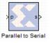

|
|
The Parallel to Serial block takes an input word and splits it into N time-multiplexed output words where N is the ratio of number of input bits to output bits. The order of the output can be either least significant bit first or most significant bit first.